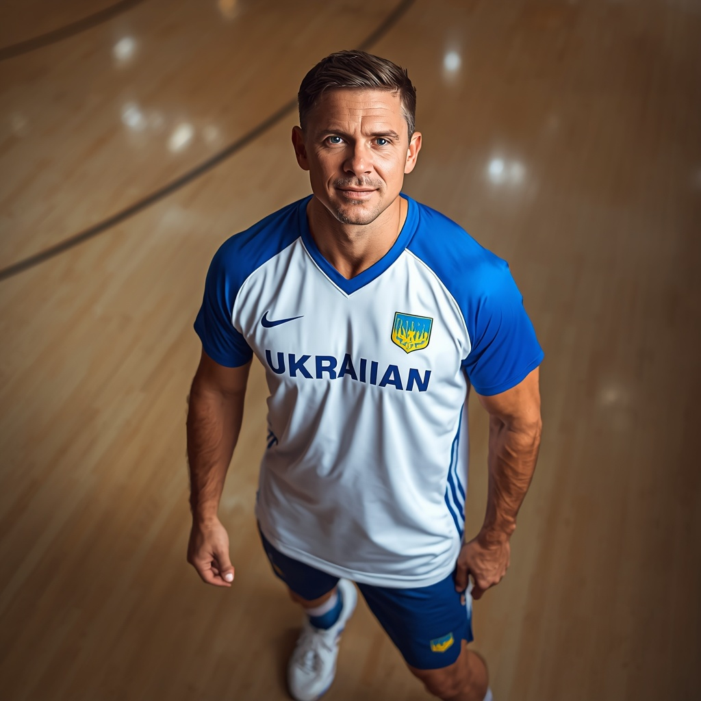
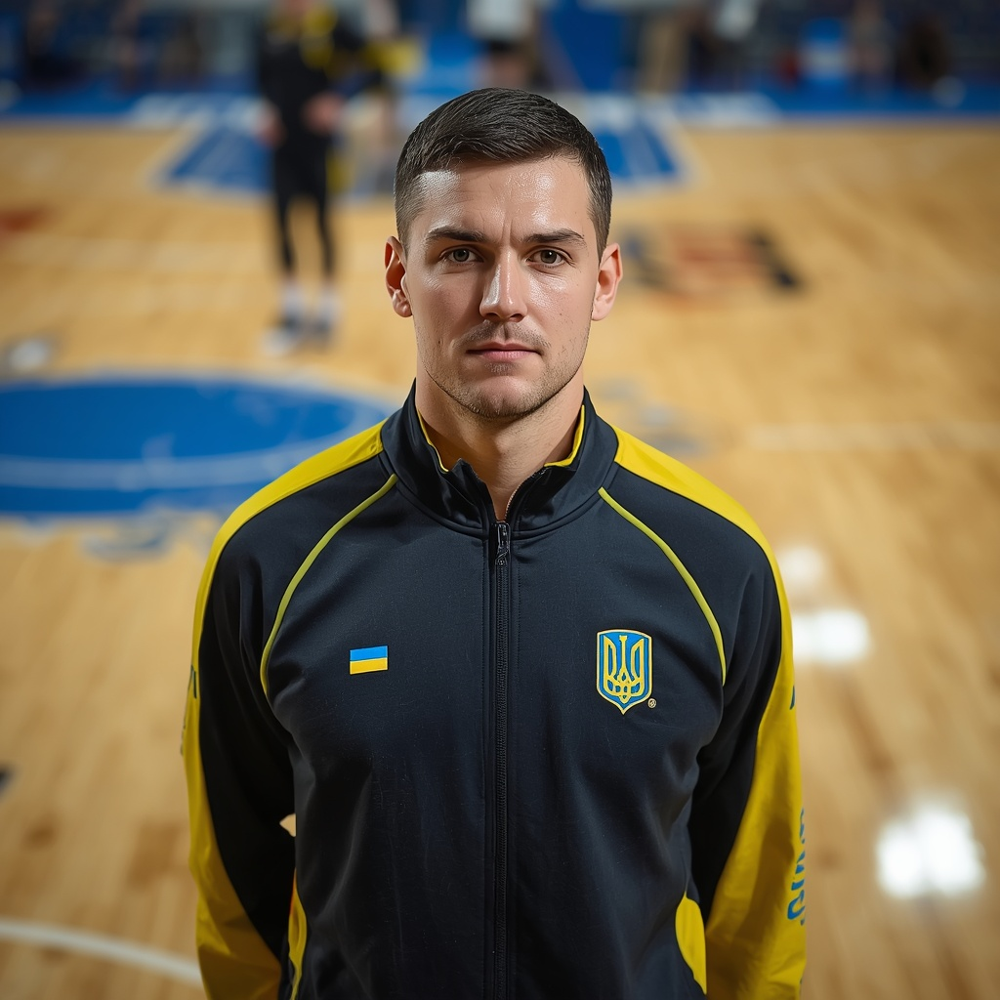
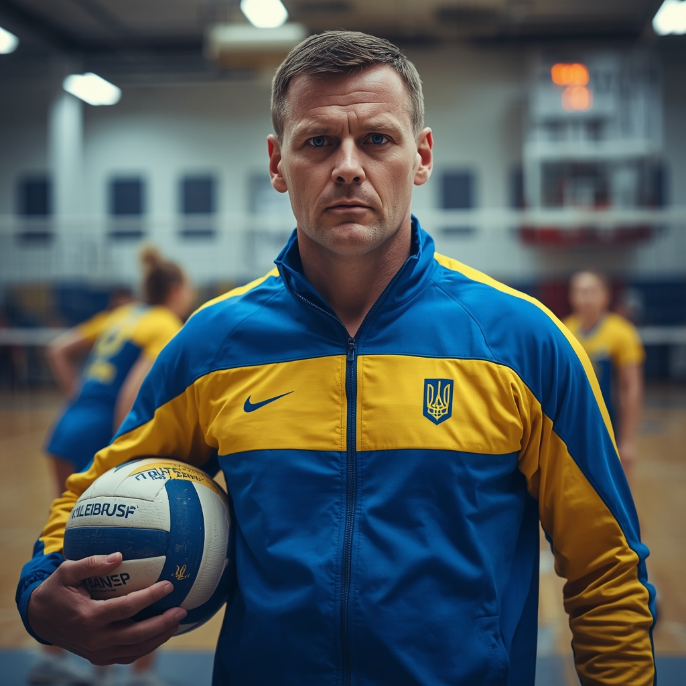
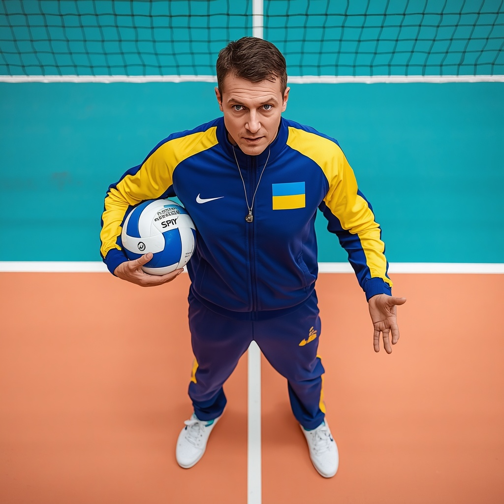
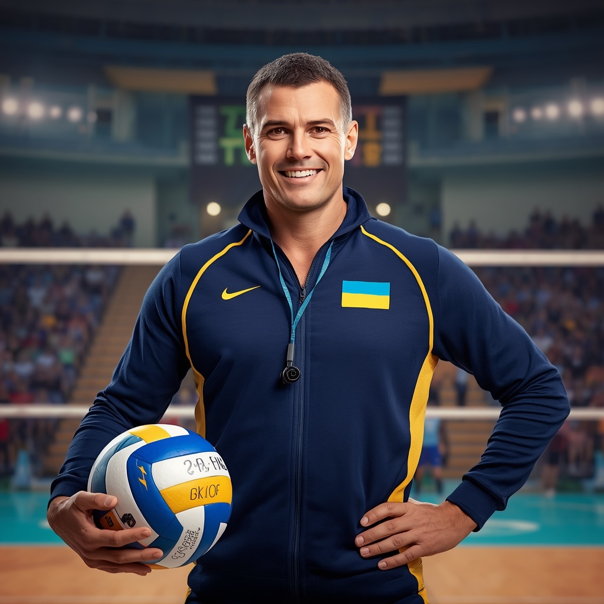

Волейбол — один із найпопулярніших видів спорту, ним займаються понад 800 мільйонів людей. Правила зародилися в США 1895 року. Грають на майданчику 18 на 9 метрів, сітка — на висоті 2,43 м (2,24 м у жінок). Найпрестижніші турніри: Олімпійські ігри та Чемпіонат світу. Найкращі гравці в історії — Кірай, Гіба, Слотєс. Матч обслуговують два арбітри, діє система відеоповторів. Гра розвиває реакцію, стрибучість і взаємодію.


Правила Гра триває до 3 переможних партій (до 25 очок, п'ята — до 15). Команда має 6 гравців, заміни — дозволені під час зупинок гри. Мета — приземлити м’яч на полі суперника. Руками ловити чи затримувати м'яч не можна (дозволено лише чисті торкання). Максимум три торкання — команда має перекинути м'яч на чужу сторону за 3 паси (блок не рахується). Порушення (торкання сітки, заступ за лінію, подвійний дотик) — очко супернику. Спеціальний гравець «ліберо» грає тільки в захисті на задній лінії. Кожна помилка — це очко і перехід подачі.

Богдан Пасічник — Волейбол. Досвід: 16 років. Спеціалізація: командна тактика, захист у полі, прийом подачі. Досягнення: майстер спорту міжнародного класу, тричі вигравав Кубок України як тренер. Про себе: «Вчу мертву забирати м'ячі в захисті та організовувати миттєву контратаку».

Денис Чернов — Волейбол. Досвід: 9 років. Спеціалізація: підготовка зв'язуючих гравців, швидкість реакції, тактика. Досягнення: диплом тренера вищої категорії, розробив систему швидких комбінацій. Про себе: «Вчу зв'язуючих мислити на секунду швидше за блок суперника».

Ярослав Клименко — Волейбол. Досвід: 11 років. Спеціалізація: техніка пасу, постановка атакуючого удару, координація. Досягнення: ліцензія CEV (Європейська конфедерація волейболу), вивів молодіжну команду в про-лігу. Про себе: «Поставлю ідеальний нападаючий удар, який проб'є будь-який блок».

Назар Гончарук — Волейбол. Досвід: 2 роки. Спеціалізація: базові навички, робота з ліберо, прийом зліту. Досягнення: призер студентської універсіади, засновник аматорського волейбольного клубу. Про себе: «Ставлю надійну базу з нуля, вчу стабільно тримати м'яч у грі та грати без помилок».

Роман Сидоренко — Волейбол. Досвід: 5 років. Спеціалізація: силова подача, стрибучість, робота на блоці. Досягнення: сертифікований тренер юнацьких ліг, виховав кращого блокуючого чемпіонату. Про себе: «Навчу подавати так, щоб суперник боявся приймати, та тримати сітку на замку».